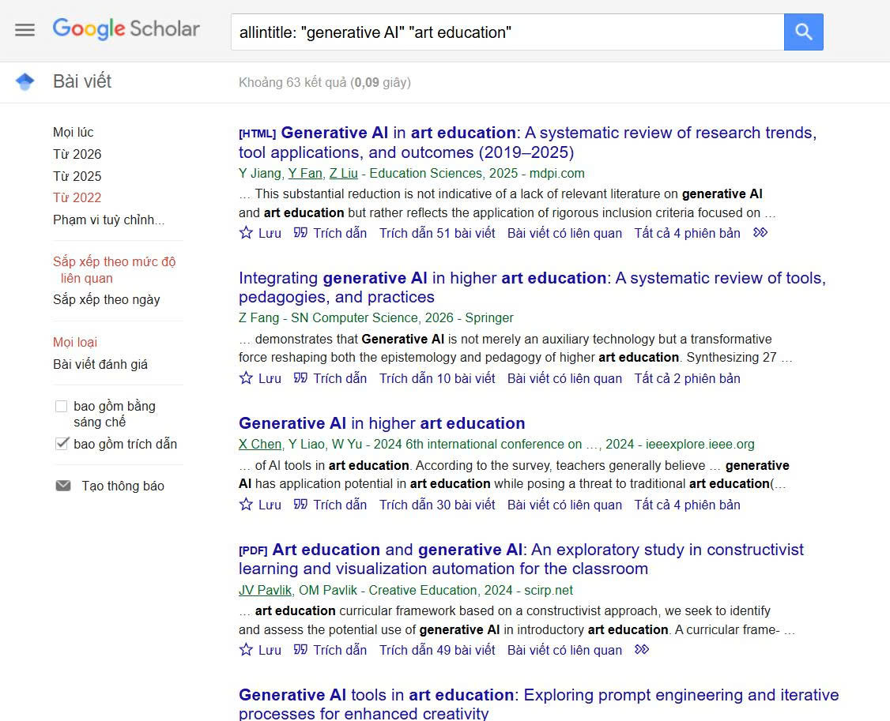

Bài 2 · Chương 2: Khai thác dữ liệu và thông tin · Điểm tối đa 0,75
Bài 2: Tìm kiếm và đánh giá thông tin học thuật
a) Mục tiêu bài tập
Yêu cầu của bài tập: chọn một chủ đề liên quan đến ngành học; tìm kiếm trên cơ sở dữ liệu học thuật, tạp chí chuyên ngành, sách chuyên khảo và nguồn mở; thu thập ít nhất 10 tài liệu (trong đó có ít nhất 5 bài báo khoa học); đánh giá độ tin cậy theo tiêu chí tác giả, cơ quan xuất bản, phương pháp nghiên cứu, trích dẫn, tính cập nhật; lập bảng tổng hợp và xếp hạng.
Chủ đề đã chọn: Ứng dụng trí tuệ nhân tạo trong giáo dục nghệ thuật (chủ đề gắn với môi trường đào tạo sư phạm nghệ thuật). Kỹ năng được rèn luyện: dùng toán tử tìm kiếm nâng cao, chọn lọc nguồn, đánh giá độ tin cậy và trích dẫn theo chuẩn Harvard.
b) Tóm tắt quá trình thực hiện
Các bước thực hiện
- Xác định câu hỏi nghiên cứu: AI đang được ứng dụng trong giáo dục nghệ thuật như thế nào, mang lại lợi ích và rủi ro gì?
- Liệt kê từ khóa tiếng Anh và tiếng Việt: artificial intelligence, generative AI, art education, visual arts; trí tuệ nhân tạo, giáo dục nghệ thuật, mỹ thuật.
- Tìm trên Google Scholar bằng dấu ngoặc kép, toán tử OR, allintitle và bộ lọc năm xuất bản từ 2022.
- Tìm trên Google Search bằng filetype:pdf và site: để lấy báo cáo chính sách và bài báo tiếng Việt.
- Đọc tóm tắt, lọc theo mức độ liên quan, chọn 11 tài liệu phù hợp nhất với chủ đề.
- Đánh giá từng tài liệu theo 5 tiêu chí, xếp hạng A, B, C và lập bảng tổng hợp.
Công cụ đã sử dụng
- Google Scholar
- Google Search (toán tử nâng cao)
- Vietnam Journals Online (VJOL)
- Trang web của UNESCO và arXiv
- Công cụ AI hỗ trợ gợi ý từ khóa (ghi rõ mục đích sử dụng)
Khó khăn và cách giải quyết
| Khó khăn | Cách giải quyết |
|---|---|
| Kết quả quá nhiều và nhiều bài chỉ nhắc đến AI chứ không nghiên cứu về nghệ thuật. | Thu hẹp bằng allintitle và cụm từ trong ngoặc kép, đồng thời đọc tóm tắt trước khi chọn. |
| Một số nguồn là bản thảo (preprint) hoặc tin tức, khó so sánh với bài báo phản biện. | Phân loại riêng và xếp hạng thấp hơn, chỉ dùng làm bối cảnh. |
| Không truy cập được toàn văn một số bài trả phí. | Chỉ dùng thông tin từ tóm tắt công khai và ghi chú rõ mức độ đã đọc. |
Khai báo sử dụng AI: Mình dùng Claude (Anthropic) để gợi ý hướng chọn chủ đề, từ khóa tìm kiếm và khung bảng đánh giá nguồn. Phần tìm kiếm trên Google Scholar, đọc tóm tắt, kiểm tra số trích dẫn và quyết định chọn hay loại từng tài liệu do mình tự thực hiện.
c) Sản phẩm cuối cùng
a) Chiến lược tìm kiếm với toán tử nâng cao
| Nguồn | Truy vấn | Mục đích toán tử |
|---|---|---|
| Google Scholar | "artificial intelligence" "art education" | Ngoặc kép: khớp đúng cụm từ |
| Google Scholar | allintitle: "generative AI" "art education" | Chỉ lấy bài có từ khóa trong tiêu đề |
| Google Scholar | ("generative AI" OR "AI") "visual arts" education | OR mở rộng từ đồng nghĩa; lọc từ 2022 |
| Google Search | "generative AI" education research guidance filetype:pdf | Lấy báo cáo chính sách dạng PDF |
| Google Search | "trí tuệ nhân tạo" "mỹ thuật" site:vjol.info.vn | Giới hạn trong kho tạp chí Việt Nam |
| CSDL thư viện trường | CSDL Thư viện ĐHSP Nghệ thuật TW: "giáo dục nghệ thuật" AND "công nghệ số" | Bổ sung sách chuyên khảo/tài liệu có bản quyền |

b) Bảng đánh giá và xếp hạng độ tin cậy
Thang xếp hạng: A là rất tin cậy (phản biện, nhà xuất bản hoặc tổ chức uy tín, phương pháp rõ), B là tin cậy nhưng cần dùng có đối chiếu, C chỉ để tham khảo bối cảnh. Cột trích dẫn cần điền số lượng "Cited by" thực tế trên Google Scholar tại thời điểm làm bài.
| TT | Tài liệu (tác giả, năm) | Loại | Tác giả và cơ quan xuất bản | Phương pháp | Cập nhật, trích dẫn | Hạng |
|---|---|---|---|---|---|---|
| 1 | Heaton, Low và Chen (2024) | Bài báo | Nhóm tác giả là nhà giáo dục nghệ thuật; tạp chí Pedagogies (NXB học thuật quốc tế) | Phản tư định tính từ 3 bối cảnh ở Singapore | 2024; trích dẫn: 18+ | A |
| 2 | Heaton (2025) | Bài báo | Tạp chí International Journal of Art & Design Education | Bài đối thoại, tổng hợp học liệu và trải nghiệm nhà giáo | 2025; trích dẫn: 18+ | A |
| 3 | Yu và Sun (2026) | Bài báo | Tạp chí International Journal of Arts and Technology | Tổng quan hệ thống 372 công bố Web of Science, mô hình chủ đề | 2026; trích dẫn: 18+ | A |
| 4 | Miao và Holmes (2023), UNESCO | Báo cáo | UNESCO, tổ chức liên chính phủ về giáo dục | Hướng dẫn chính sách dựa trên khung đạo đức AI | 2023; trích dẫn: 18+ | A |
| 5 | Adeel và Yasmeen (2025) | Bài báo | Tạp chí JDSS (truy cập mở, có DOI) | Tổng quan hệ thống 20 nghiên cứu phản biện 2020–2025 | 2025; trích dẫn: 18+ | B |
| 6 | Blair (2025) | Bài báo | Tạp chí AJSTEM, Đại học Tennessee Tech | Bài thảo luận khái niệm, không có dữ liệu thực nghiệm | 2025; trích dẫn: 18+ | B |
| 7 | Wang và cs. (2025) | Bài báo | Tạp chí IJICT (Inderscience) | Tổng quan kỹ thuật học sâu, GAN, chuyển phong cách | 2025; trích dẫn: 18+ | B |
| 8 | Sims (2024) | Bản thảo | arXiv, tác giả Đại học Kyoto Seika | Phân tích và đề xuất tích hợp Stable Diffusion; chưa phản biện | 2024; trích dẫn: 18+ | B |
| 9 | Nguyễn và Đặng (2026) | Bài báo | Đăng trên VJOL; cần kiểm tra tên tạp chí | Khảo sát giáo viên THCS Khánh Hòa; cần kiểm tra cỡ mẫu | 2026; trích dẫn: 18+ | B |
| 10 | Bùi (2025) | Bài báo | Đăng trên VJOL; cần kiểm tra tên tạp chí | Tổng hợp tài liệu quốc tế và trường hợp tại Việt Nam | 2025; trích dẫn: 18+ | B |
| 11 | Đào (2026) | Tin báo chí | Báo Giáo dục và Thời đại | Tường thuật sự kiện tập huấn, không phải nghiên cứu | 08/2026; không áp dụng | C |
Kết quả: 11 tài liệu về chủ đề chính (8 bài báo khoa học, 1 báo cáo UNESCO, 1 bản thảo, 1 tin báo chí), thỏa yêu cầu tối thiểu 10 tài liệu và 5 bài báo khoa học. Có 4 nguồn hạng A, 6 nguồn hạng B và 1 nguồn hạng C. Danh mục đầy đủ theo định dạng Harvard nằm ở cuối báo cáo và cuối trang này.
c) Nhận xét ngắn
Các nguồn hạng A đều có phản biện hoặc đến từ tổ chức uy tín, cùng nhấn mạnh rằng AI nên hỗ trợ chứ không thay thế sáng tạo của người học (Heaton, Low và Chen, 2024; Miao và Holmes, 2023). Các tài liệu tiếng Việt còn ít và thiên về khảo sát nhận thức, vì vậy khi viết bài cần đối chiếu với nguồn quốc tế.
Tài liệu tham khảo (Harvard)
- Adeel, T.J. và Yasmeen, K. (2025) 'An overview of artificial intelligence applications in art education', Journal of Development and Social Sciences, 6(2), tr. 357–366. doi:10.47205/jdss.2025(6-II)30.
- Anthropic (không rõ năm) Prompt engineering overview. Truy cập tại: https://docs.claude.com/en/docs/build-with-claude/prompt-engineering/overview (Ngày truy cập: 24/10/2026).
- Blair, J. (2025) 'Art meets AI: exploring the opportunities and challenges of integrating artificial intelligence in the art classroom', American Journal of STEM Education: Issues and Perspectives, 14, tr. 59–74. doi:10.32674/5hm64807.
- Brown, T.B. et al. (2020) 'Language models are few-shot learners', Advances in Neural Information Processing Systems, 33.
- Bùi, T.T.T. (2025) 'AI trong giáo dục liên ngành: cơ hội và thách thức đối với nghệ thuật, thiết kế và văn hóa', Vietnam Journals Online (VJOL). Truy cập tại: https://vjol.info.vn/jshou/article/view/121999 (Ngày truy cập: 24/10/2026).
- Đào, H. (2026) 'Tập huấn kỹ năng ứng dụng AI nâng cao cho giảng viên, giáo viên nghệ thuật', Giáo dục và Thời đại, 26/08. Truy cập tại: https://giaoduc.net.vn/tap-huan-ky-nang-ung-dung-ai-nang-cao-cho-giang-vien-giao-vien-nghe-thuat-post262400.gd (Ngày truy cập: 24/10/2026).
- Heaton, R. (2025) 'Making peace with artificial intelligence (AI) in art education', International Journal of Art & Design Education, tr. 1–16.
- Heaton, R., Low, J.H. và Chen, V. (2024) 'AI art education – artificial or intelligent? Transformative pedagogic reflections from three art educators in Singapore', Pedagogies: An International Journal, 19(4). doi:10.1080/1554480X.2024.2395260.
- Miao, F. và Holmes, W. (2023) Guidance for generative AI in education and research. Paris: UNESCO. Truy cập tại: https://unesdoc.unesco.org/ark:/48223/pf0000386693 (Ngày truy cập: 24/10/2026).
- Nguyễn, V.T. và Đặng, V.Đ. (2026) 'Ứng dụng trí tuệ nhân tạo (AI) trong dạy học mỹ thuật ở trung học cơ sở trên địa bàn tỉnh Khánh Hòa', Vietnam Journals Online (VJOL). Truy cập tại: https://vjol.info.vn/dhkh/article/view/125945 (Ngày truy cập: 24/10/2026).
- Sims, A. (2024) 'From creation to curriculum: examining the role of generative AI in arts universities', arXiv preprint arXiv:2412.16531. Truy cập tại: https://arxiv.org/abs/2412.16531 (Ngày truy cập: 24/10/2026).
- Wang, L., Li, B., Fan, X. và Ji, Y. (2025) 'A review of AI-driven art education: enhancing creativity through deep learning and digital image processing', International Journal of Information and Communication Technology, 26(23). doi:10.1504/IJICT.2025.10071872.
- Wei, J. et al. (2022) 'Chain-of-thought prompting elicits reasoning in large language models', Advances in Neural Information Processing Systems, 35.
- Yu, Y. và Sun, R. (2026) 'Trends and topics in arts education and artificial intelligence: a systematic review using a human-in-the-loop model', International Journal of Arts and Technology, 16.